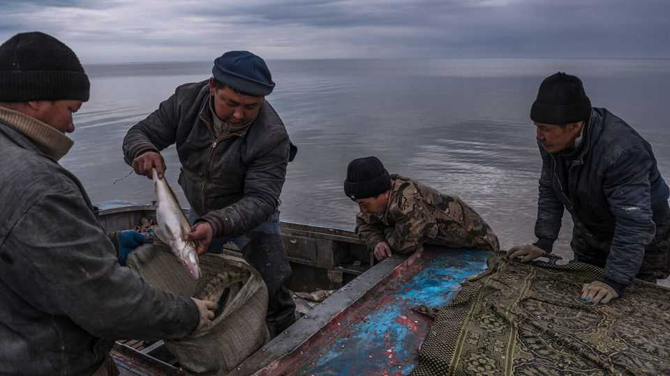
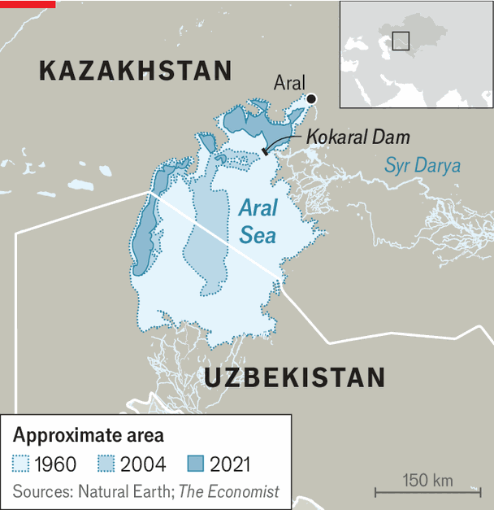

The North Aral Sea is expanding after decades of shrinkage
The southern remnant is probably still doomed, however

Oct 29th 2026
THE ARAL SEA has long been a byword for ecological disaster. Once the world’s fourth-largest lake, it has been steadily drying up since the 1960s, when the Soviet Union diverted rivers flowing into it to boost cotton production. The lake’s exposed bed became a desert lined with the toxic remnants of fertilisers and industrial waste. Strong winds blow poisonous dust from the sands onto nearby communities.
But the Aral is not gone yet. Two much smaller bodies of water still straddle the edges of the new desert. The southern remnant lies in a trench in the lake’s bed. It survives with inflows from nearby aquifers. It may last a bit longer though little can be done to enlarge it.

The North Aral is a different story, though. It is bordered by higher ground, which cuts it off from the desert except for the tiny Kokaral Strait. Kazakhstan dammed that gap in 2005, but for many years struggled to refill the rump lake.
Finally, however, a recovery is beginning. Early results are promising. Since 2022 its volume has risen by a quarter. Kazakhstan’s government says it has reclaimed 870 square kilometres of desert and lowered the lake’s salinity by 75%. Fish, which had vanished, have been reintroduced: locals caught 8,000 tonnes last year. After planned upgrades to the Kokaral Dam, Kazakhstan hopes to fill the lake to its highest level since the North Aral split off in 1987.
Kazakhstan’s success is thanks to several factors. Canal and dam upgrades along the Syr Darya river coupled with unexpectedly high seasonal inflows account for most of the gains since 2022. In 2025 the country negotiated a new water-sharing agreement with its upriver neighbours, Kyrgyzstan and Uzbekistan, selling the former electricity in exchange for more water.
But problems persist. Roughly 60% of the water on Kazakhstan’s side is soaked up by agriculture, but less than a quarter of the country’s farmers use water-saving technologies like sprinklers or drip-fed irrigation. Existing infrastructure is in disrepair. The Syr Darya is at risk, too. The glaciers that feed it are slowly melting. Inflows have already fallen below peak summer demand. All the same, the North Aral Sea has begun to defy doomsayers predicting its ultimate extinction.■
For exclusive coverage of Asian politics, economics and security, sign up to Asia Bulletin, our weekly subscriber-only newsletter.